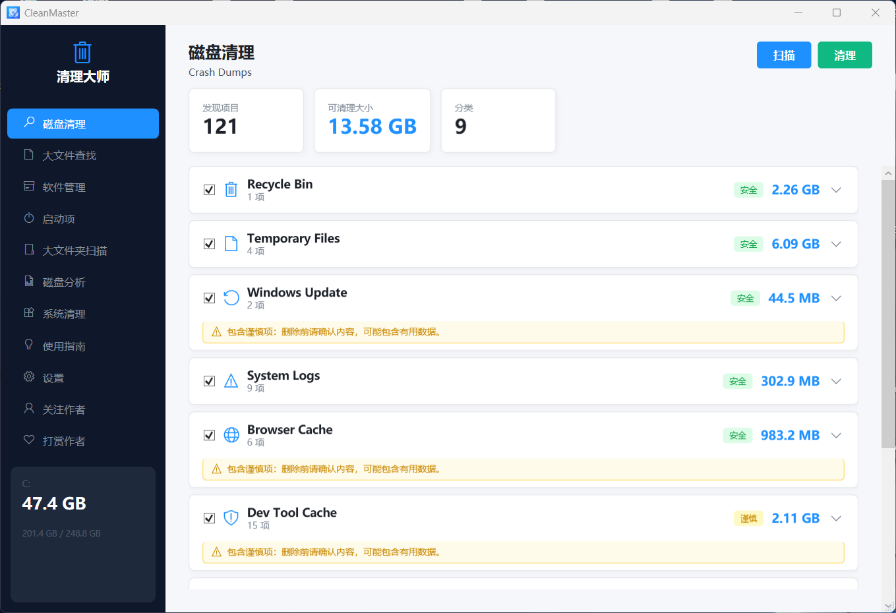

01 / WINDOWS UTILITY在 GitHub 查看项目View project on GitHub
CleanMaster
一款面向新手的 Windows 磁盘清理工具。它把杂乱的维护任务变成清晰的分类、可理解的结果与受控的操作，让释放空间不再是一场猜测。
A beginner-friendly Windows disk cleanup tool. It turns opaque maintenance into clear categories, understandable results, and controlled actions — no guesswork required.
平台PlatformWindows Desktop
构建Built withWPF · .NET
原则Principle先理解，再操作Understand before acting

CleanMaster 磁盘清理界面实拍。
Live CleanMaster disk cleanup interface.